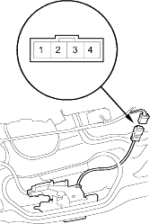

- Remove the tailgate trim panel (see page 20-209).
- Open the tailgate.
- Disconnect the 4P connector from the tailgate lock actuator.
Terminal side of male terminals

- Check for continuity between the terminals.
- There should be continuity between the No. 3 and No. 4 terminals when the tailgate lock knob switch is UNLOCK position.
- There should be no continuity between the No. 3 and No. 4 terminals when the tailgate lock knob switch is LOCK position.